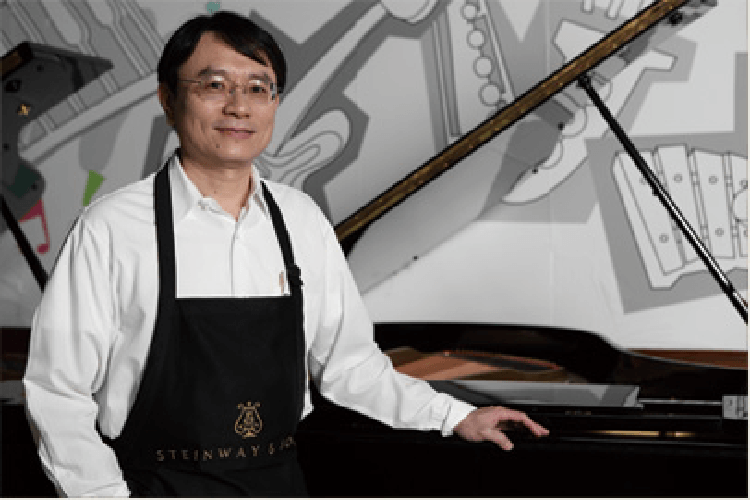
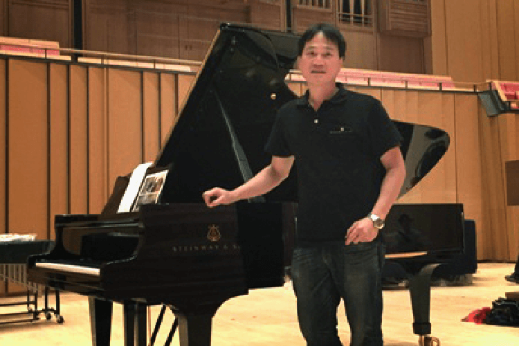

KHS功學社樂器維修中心
全台最完美的專業樂器維修團隊，讓演奏者無後顧之憂。 功學社樂器維修團隊精修銅管樂器，木管樂器，打擊樂器，維修技術備受肯定。 定期前往國外深造，接受法國，日本專業的維修訓練，習得法國SELMER，日本ALTUS及MASTER原廠認證的技術，並擁有全台最為完備的管樂打擊維修環境及專業設備工具，提供演奏者們安心的優質維修服務。
專業維修團隊
80年維修經驗，呵護子女般的父母心
全台最完美的專業樂器維修團隊，讓演奏者無後顧之憂。 功學社樂器維修團隊精修銅管樂器，木管樂器，打擊樂器，維修技術備受肯定。 定期前往國外深造，接受法國，日本專業的維修訓練，習得法國SELMER，日本ALTUS及MASTER原廠認證的技術，並擁有全台最為完備的管樂打擊維修環境及專業設備工具，提供演奏者們安心的優質維修服務。
彭瑞懋
日本山葉鋼琴研究所畢業
德國史坦威鋼琴研究所畢業
內政部鋼琴調律技術檢定評審
第八屆中華民國調律協會理事長
國家音樂廳指定調律師
林啟示
日本山葉鋼琴研究所畢業
德國史坦威鋼琴研究所畢業
現任台灣中華民國調律協會常務理事,秘書長
國家音樂廳指定調律師

陳世昌
日本山葉鋼琴研究所畢業
德國史坦威鋼琴研究所畢業
第八屆中華民國調律協會監事
國家音樂廳指定調律師

陳啟展
日本史坦威鋼琴研究所畢業
現任台灣調律協會常務理事
台中市樂器調音職業工會理事
國家音樂廳指定調律師
李俊利
德國史坦威鋼琴研究所畢業
台灣鋼琴調律協會常務理事
高雄市樂器商業同業工會監事
國家音樂廳指定調律師

維修據點
與管樂有關之任何疑問，請與我們聯絡，服務部全省有 50 位調音師，隨時以最專業、熱忱的技術來為您服務。
門市名稱
地址
電話
台北復興店
台北市大安區復興南路一段322號
02-27091266
台北蘆洲店
新北市蘆洲區中山二路162號
02-82838255
台中店
台中市中區市府路97號
04-22206176
嘉義店
嘉義市仁愛路371號
05-2238283
台南店
台南市中西區中正路55號
06-2200012
高雄五福店
高雄市鹽埕區五福四路104號
07-5517621
高雄三多店
高雄市前鎮區三多三路207號
07-3316072
花蓮店
花蓮市中山路475-3號
03-8325651